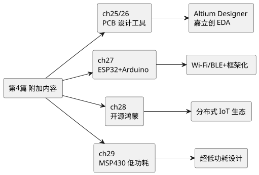
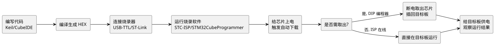

第 24 章 概述与学习方法
学习目标
- 理解本篇在课程中的定位：课堂不深入讲授，靠学生自学完成
- 了解第 4 篇各章主题与学习路径，能够制定自学计划
- 回顾传统烧录器开发方式，理解其在整个开发流程中的基础地位
- 掌握多种开发方式的综合对比方法，为不同项目场景做出合理选型
- 掌握高效自学单片机新技术的方法与资源获取途径
本课程前 3 篇以 STC89C52RC（MCS-51 内核）与 STM32F407（Cortex-M4 内核）为主线，已系统讲解了 8 位与 32 位单片机的开发。然而，单片机的世界远不止这两种平台——不同的芯片架构、不同的开发框架、不同的设计工具，各自适应不同的应用场景。第 4 篇作为"单片机开发附加内容"，将介绍 PCB 设计工具、物联网开发平台、分布式操作系统以及低功耗单片机等多个拓展主题，帮助读者建立完整的技术地图。

查看 PlantUML 源码
@startuml
skinparam defaultFontName "Microsoft YaHei"
skinparam backgroundColor #ffffff
left to right direction
rectangle "第4篇 附加内容" as A
rectangle "ch25/26\nPCB 设计工具" as B
rectangle "ch27\nESP32+Arduino" as C
rectangle "ch28\n开源鸿蒙" as D
rectangle "ch29\nMSP430 低功耗" as E
rectangle "Altium Designer\n嘉立创 EDA" as B1
rectangle "Wi-Fi/BLE+框架化" as C1
rectangle "分布式 IoT 生态" as D1
rectangle "超低功耗设计" as E1
A --> B
A --> C
A --> D
A --> E
B --> B1
C --> C1
D --> D1
E --> E1
@enduml24.1 本篇定位与学习路径
第 4 篇的内容定位与前 3 篇有本质不同。前 3 篇是课程核心主线，由教师在课堂上系统讲授并通过实验验证；第 4 篇则是拓展视野与技能补充的内容，课堂上仅做简要介绍，详细学习需要学生利用课外时间自主完成。
24.1.1 为什么设置自学篇
单片机技术发展迅速，一个学期的课堂时间无法覆盖所有平台和工具。设置自学篇有以下考虑：
- 培养自学能力：工程实践中，新技术学习主要靠自学，课堂只是起点而非终点。
- 拓宽技术视野：了解不同平台（ESP32、OpenHarmony、MSP430）和工具（Altium Designer、嘉立创 EDA）的存在与特点，避免"只会一种工具"的局限。
- 对接产业需求：企业项目中常涉及 PCB 设计、物联网、低功耗等综合需求，课堂讲的单片机编程只是其中一环。
- 为毕业设计铺路：很多毕业设计需要 PCB 制板、物联网通信或低功耗设计，本篇提供入门指引。
24.1.2 学习路径建议
本篇各章相对独立，学生可根据兴趣和需求选择性学习。以下是三种推荐路径：
| 路径 | 目标 | 建议章节顺序 | 预计学时 |
|---|---|---|---|
| 硬件设计方向 | 掌握 PCB 设计能力 | ch25 → ch26 → ch29 | 20-30 小时 |
| 物联网开发方向 | 掌握 Wi-Fi/BLE 与分布式系统 | ch27 → ch28 | 15-25 小时 |
| 低功耗方向 | 掌握电池供电设计 | ch29 → ch27 | 10-15 小时 |
| 全面学习 | 建立完整技术地图 | ch24 → ch25 → ch26 → ch27 → ch28 → ch29 | 40-60 小时 |
24.2 各章主题概览
本篇共 6 章（ch24-ch29），覆盖 PCB 设计、物联网开发、分布式操作系统、低功耗单片机四大方向。下表给出各章的简要介绍：
| 章号 | 标题 | 核心内容 | 难度 | 是否需硬件 |
|---|---|---|---|---|
| 第 24 章 | 概述与学习方法 | 本篇定位、传统烧录器回顾、开发方式对比、自学方法 | 低 | 否 |
| 第 25 章 | Altium Designer PCB 设计 | AD 软件安装、原理图设计、PCB 布局布线、Gerber 输出、实战 STC89 最小系统板 | 中 | 否（软件操作） |
| 第 26 章 | 嘉立创 EDA PCB 设计 | 国产在线 EDA、原理图与 PCB 设计、一键下单打样、实战 STM32 最小系统板 | 中 | 否（软件操作） |
| 第 27 章 | ESP32 + Arduino 开发 | ESP32 硬件、Arduino 框架、GPIO/串口/Wi-Fi/BLE/PWM/ADC/I2C/OTA、综合项目 | 中高 | 是（ESP32 开发板） |
| 第 28 章 | 开源鸿蒙 OpenHarmony | LiteOS-M 内核、DevEco 工具、Hi3861 开发板、HDF 驱动框架、分布式软总线、综合项目 | 高 | 是（Hi3861 开发板） |
| 第 29 章 | MSP430 低功耗单片机 | MSP430 架构、5 种低功耗模式、低功耗 LED 闪烁、与其他平台对比 | 中 | 是（MSP430 LaunchPad） |
24.2.1 各章详细定位
第 25 章 Altium Designer与第 26 章 嘉立创 EDA是 PCB 设计的姊妹篇。Altium Designer 是行业最主流的专业 EDA 软件，功能强大但学习曲线较陡；嘉立创 EDA 是国产在线 EDA 工具，免费易用且与嘉立创工厂无缝对接，适合学生和小型项目。两章对照学习可以理解不同 EDA 工具的设计思路差异。
第 27 章 ESP32 + Arduino是物联网开发入门的事实标准。ESP32 集成 Wi-Fi 和 BLE，配合 Arduino 框架的简洁 API，初学者也能快速开发物联网应用。本章从环境搭建到综合项目，覆盖完整开发流程。
第 28 章 开源鸿蒙 OpenHarmony代表面向 IoT 生态的操作系统思路。OpenHarmony 的轻量级系统（LiteOS-M）运行在 MCU 上，通过 HDF 统一驱动接口与分布式软总线实现跨设备协同，适合需要多端联动的智能家居场景。
第 29 章 MSP430是 TI 的 16 位超低功耗混合信号单片机，待机功耗低至 0.5 µA，是电池供电传感节点的优选平台。本章介绍其低功耗模式与设计范式。
24.3 传统烧录器开发方式回顾
在进入各章具体内容之前，先回顾本课程一直在使用的传统烧录器开发方式。这是最经典、也是 STC 篇与 STM32 篇一直在使用的开发方式，其核心流程是："在电脑上编写/编译代码 → 通过烧录器将程序写入芯片 → 断电后将芯片从烧录座/编程器取出 → 插回目标开发板通电运行"。这种"先烧录、再插回"的模式在早期单片机开发中几乎不可替代。
24.3.1 工作流程
以 STC89C52RC 为例，传统烧录方式的完整流程如下：
- 编写代码：在 Keil C51 中编写 C 语言源程序（
.c文件）。 - 编译链接：Keil 编译生成 Intel HEX 格式的可烧录文件（
.hex）。 - 连接烧录器：通过 USB 转串口模块（如 CH340）将电脑与开发板连接，或将芯片放入专用编程器插座。
- 烧录程序：打开 STC-ISP 软件，选择 HEX 文件，点击"下载/编程"，然后给芯片上电（STC 系列需冷启动触发自动检测）。
- 断电取出：烧录完成后断电，若芯片原本在编程器中，则取出芯片插回目标板。
- 运行验证：给目标板供电，观察 LED、串口、显示器等外设是否按预期工作。
对于早期 DIP 封装的芯片（如 AT89S52、ATmega8 等），"取出-插入"是物理动作：芯片插在编程器 ZIF 插座中烧录，完成后用手拔下，再插到目标板的 IC 座上。这种方式又称"离线烧录"或"独立编程器模式"。

查看 PlantUML 源码
@startuml
skinparam defaultFontName "Microsoft YaHei"
skinparam backgroundColor #ffffff
left to right direction
rectangle "编写代码\nKeil/CubeIDE" as A
rectangle "编译生成 HEX" as B
rectangle "连接烧录器\nUSB-TTL/ST-Link" as C
rectangle "运行烧录软件\nSTC-ISP/STM32CubeProgrammer" as D
rectangle "给芯片上电\n触发自动下载" as E
rectangle "是否需取出?" as F
rectangle "断电取出芯片\n插回目标板" as G
rectangle "直接在目标板运行" as H
rectangle "给目标板供电\n观察运行结果" as I
A --> B
B --> C
C --> D
D --> E
E --> F
F --> G : 是, DIP 编程器
F --> H : 否, ISP 在线
G --> I
H --> I
@enduml24.3.2 ISP 在线下载的演进
随着芯片集成 ISP（In-System Programming，在系统编程）功能，"取出-插入"逐步被"在线下载"取代。STC89C52RC 通过串口（TXD/RXD）即可 ISP 下载，无需将芯片从目标板拔下；STM32 通过 SWD/JTAG 接口配合 ST-Link 也能在线烧录与调试。但本质流程仍是"编译 → 烧录 → 运行"，只是物理拔插步骤被省略。
下表对比离线编程器与在线 ISP 两种方式：
| 方式 | 代表工具 | 是否需拔芯片 | 烧录速度 | 是否可在线调试 | 典型场景 |
|---|---|---|---|---|---|
| 离线编程器 | 万用编程器（如 SuperPro） | 是 | 快 | 否 | 批量生产、空白片烧录 |
| 串口 ISP | STC-ISP + USB-TTL | 否 | 中 | 否 | STC 系列教学/开发 |
| SWD/JTAG | ST-Link / J-Link | 否 | 快 | 是 | STM32/ARM 开发调试 |
24.3.3 优缺点分析
传统烧录器方式历经数十年仍被广泛使用，原因在于其简单可靠：
- 优点：流程清晰；不依赖目标板上的引导程序；对芯片要求低（任何单片机都可烧录）；适合批量生产。
- 缺点：开发迭代慢（每次改代码都要重新烧录）；早期拔插易损坏芯片引脚；无法在线调试（无 SWD 的芯片）；对初学者不友好。
24.4 多种开发方式综合对比
本篇将介绍多种开发方式与平台。下表从多个维度进行综合对比，帮助读者在不同场景下做出合理选型。需要注意的是，PCB 设计工具（ch25/ch26）与单片机开发平台（ch27-ch29）属于不同维度——前者是硬件设计工具，后者是嵌入式软件开发平台，两者在实际项目中相辅相成。
| 维度 | 传统烧录器 | ESP32+Arduino | OpenHarmony | MSP430 |
|---|---|---|---|---|
| 代表芯片 | STC89C52RC | ESP32 | Hi3861 | MSP430F5529 |
| 内核 | 8051 CISC | Xtensa LX6 双核 | RISC-V | MSP430 RISC |
| 位宽 | 8 位 | 32 位 | 32 位 | 16 位 |
| 开发框架 | Keil C51 裸机 | Arduino Core | OpenHarmony LiteOS-M | CCS 裸机 |
| 烧录方式 | 串口 ISP / 编程器 | 串口 USB 自动 | 串口/USB | JTAG/SBW |
| RAM 需求 | 256 B 起 | 520 KB 内置 | ≥ 128 KB | 2 KB 起 |
| 典型功耗 | 毫安级 | 数十 mA（Wi-Fi） | 数十 mA（Wi-Fi） | 0.5 µA（LPM4） |
| 开发效率 | 中 | 高（生态丰富） | 高（组件化） | 中 |
| 学习难度 | 低 | 低 | 中 | 中 |
| 典型场景 | 教学入门、低端控制 | 物联网、智能家居 | 分布式 IoT 生态 | 电池供电、传感节点 |
| 本课程定位 | 第 2 篇入门 | 第 4 篇拓展 | 第 4 篇拓展 | 第 4 篇拓展 |
- 需要 Wi-Fi/蓝牙 连接 → ESP32+Arduino 或 OpenHarmony（Hi3861）
- 需要 跨设备分布式协同 → OpenHarmony
- 需要 极致低功耗（电池供电数年）→ MSP430
- 需要 简单控制 + 极低成本 → STC89 + 传统烧录器
- 需要 高性能信号处理 + RTOS → STM32F4（第 3 篇已学）
- 需要 自制 PCB 电路板 → Altium Designer 或 嘉立创 EDA
24.5 自学方法与资源建议
本篇内容需要学生自主学习的部分较多，掌握正确的自学方法至关重要。以下是一些实用建议：
24.5.1 高效自学方法
- 先跑通再理解：不要一开始就深究每个配置选项的含义，先按教程把示例跑通，看到效果后再回头理解细节。"先有结果再求理解"是学习新工具的最快路径。
- 动手实践为主：每章都有实战项目，强烈建议购买对应的开发板（ESP32 约 15 元、Hi3861 约 30 元、MSP430 LaunchPad 约 50 元）亲手实践。只看不练等于没学。
- 分模块学习：每章按 §x.1、§x.2 的顺序逐步推进，每完成一节就动手验证，不要跳读。遇到不懂的先标记，继续往下学，很多概念在后续章节会自然理解。
- 善用 AI 辅助：使用 TRAE、Copilot 等 AI 工具辅助理解代码、排查报错、生成示例，但要注意理解 AI 给出的代码而非盲目复制。
- 做笔记与总结：每学完一章，用自己的话写一段总结，记录关键命令、易错点、踩坑经验。这些笔记在毕业设计和工作中会非常有用。
24.5.2 推荐学习资源
| 资源类型 | 推荐资源 | 用途 |
|---|---|---|
| 官方文档 | Arduino Reference、ESP-IDF Programming Guide、OpenHarmony 开发者文档、TI MSP430 User Guide | 权威 API 说明与配置参考 |
| 视频教程 | B 站搜"ESP32 Arduino 入门""OpenHarmony Hi3861""Altium Designer 教程""嘉立创 EDA 教程" | 直观学习操作步骤 |
| 开源社区 | GitHub、Gitee、Arduino Project Hub、Hackster.io | 参考项目与代码示例 |
| 论坛问答 | Stack Overflow、CSDN、电子发烧友论坛、21IC | 报错排查与经验交流 |
| 官方工具 | Arduino IDE、PlatformIO、DevEco Device Tool、Altium Designer、嘉立创 EDA | 开发与设计工具下载 |
| 芯片手册 | ESP32 Datasheet、Hi3861 Datasheet、MSP430x5xx Family User's Guide | 底层寄存器与电气特性 |
24.5.3 常见自学误区
- "先看完所有理论再动手"：错误。单片机学习本质是实践技能，理论了解大意即可动手，遇到问题再查文档。
- "只学一个平台就够"：错误。不同平台解决不同问题，ESP32 适合物联网、MSP430 适合低功耗、STM32 适合高性能，多掌握才能灵活选型。
- "照抄代码不看原理"：错误。抄来的代码遇到报错就不会改。至少要理解 setup/loop、GPIO、串口这些基础概念。
- "跳过 PCB 设计"：不推荐。毕业设计和工作中经常需要自制电路板，至少掌握一种 EDA 工具的基本操作。
- "不买开发板只用仿真"：不推荐。仿真与真实硬件有差异（时序、电气特性），且缺少动手接线经验。开发板成本低（15-50 元），值得投资。
本章小结
- 第 4 篇是自学拓展篇，覆盖 PCB 设计（ch25/ch26）、物联网开发（ch27）、分布式操作系统（ch28）、低功耗单片机（ch29）四大方向。
- 传统烧录器方式是最经典的开发流程："编写代码 → 编译生成 HEX → 通过烧录器写入芯片 → 断电取出插回目标板 → 通电运行"。现代 ISP 在线下载简化了流程，但本质不变。
- 多种开发方式各有侧重：传统烧录器简单可靠、ESP32+Arduino 高效易用、OpenHarmony 生态协同、MSP430 极致低功耗。掌握多种方式才能在不同场景下做出合理选型。
- 高效自学方法是"先跑通再理解、动手实践为主、分模块学习、善用 AI 辅助、做笔记总结"。建议购买对应开发板亲手实践。
思考题与习题
- 本篇为什么设置为"自学篇"？请从课程学时限制、培养学生自学能力、对接产业需求三个角度说明。
- 简述传统烧录器方式的完整流程，并说明 ISP 在线下载相比离线编程器的优势。
- 对比 ESP32、OpenHarmony（Hi3861）、MSP430 三种平台，它们各自适合什么应用场景？
- 设计一款户外温湿度记录仪，要求一节 AA 电池工作一年并具备 Wi-Fi 上传能力。你会如何选型？说明理由。
- 制定一份自己的本篇学习计划：选择 2-3 章深入学习，说明选择理由和预期学习成果。
- 列举自学单片机新技术的 3 个常见误区，并说明如何避免。
参考文献
- 乐鑫科技. ESP32 Datasheet [Z]. 2024. https://www.espressif.com/
- 开放原子开源基金会. OpenHarmony 开发者文档 [EB/OL]. https://www.openharmony.cn/
- TI 官方. MSP430x5xx/6xx Family User's Guide (SLAU208) [Z]. 2018. https://www.ti.com/
- Altium LLC. Altium Designer Documentation [EB/OL]. https://www.altium.com/documentation/
- 嘉立创 EDA. 嘉立创 EDA 帮助文档 [EB/OL]. https://docs.lceda.cn/
- Arduino Project. Arduino Language Reference [EB/OL]. https://www.arduino.cc/reference/en/
- PlatformIO. PlatformIO IDE Documentation [EB/OL]. https://docs.platformio.org/